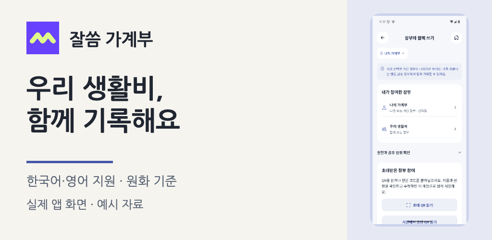

함께 쓴 생활비와 나 혼자 쓴 돈. 한 장부에 모아두면 편할 때도 있지만, 따로 보고 싶은 순간도 있죠. 잘씀은 그 작은 차이에서 출발했어요.

내 기록과 우리 생활비를 나눠서
개인 장부는 내 소비를 정리하는 공간으로, 공동 장부는 초대한 사람들과 생활비를 기록하는 공간으로 준비했어요. 지금 어떤 장부를 보고 있는지, 누가 편집하고 누가 볼 수 있는지도 확인할 수 있어요.
다시 입력하는 수고는 줄이고, 확인은 남기고
결제 문자를 붙여넣거나 공유하면 금액·날짜·분류를 검토할 수 있어요. 여러 내역도 확인하며 이어서 저장하도록 다듬었어요. 인식하지 못하는 형식은 직접 고칠 수 있고, 문자함 자동 수집이나 은행 자동 연결은 제공하지 않아요.
월급날을 기준으로 한 달 보기
매달 생활비를 시작하는 날짜를 정하고, 분류별로 얼마를 썼고 얼마나 남았는지 확인할 수 있어요. 현재 한국어·영어 화면과 원화 기준 예산을 지원해요.
이제 준비하는 것들
지금은 내부 시험을 진행하며 출시를 준비하는 단계예요. 일반 다운로드는 아직 열리지 않았어요. 정식 제공 전 스토어 심사와 실제 기기·구매 확인을 더 진행하고, 설치 가격과 이용권 조건을 확정해 안내할게요.
체험하고 싶다면 사용하는 기기와 생활비 관리에서 불편했던 점을 알려주세요. 현재 시험 상황에 맞춰 가능한 체험 방법을 안내해 드릴게요.